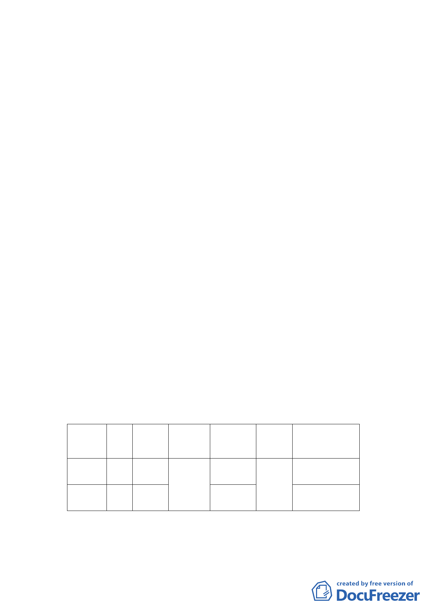

用停車空間鼓勵要點』」規定，依現行法令規定辦理。
(6)擬定都市設計管制準則。
(7)開發方式：計畫區採都市更新方式整體開發，以確保基
地範圍內公私有土地權益以及基地整體環境品質。
(8)開發期程：本案預估於都市更新權利變換計畫公告後五
年內分期分區開發完成，總開發經費約276億元。
(9)其他：
A. 本案依修訂「臺北市主要計畫商業區（通盤檢討）計畫
案」之規定，於 92 年依原都市計畫，應回饋捐贈 20％
土地供當地所最需之各項公共設備與服務使用之規
定，依原計畫辦理。應回饋道路用地及公園用地土地產
權應移轉登記為臺北市所有，道路用地及公園用地於計
畫公告實施後配合可體驗區興闢完成，於取得使用執照
前，完成產權移轉捐贈程序。
B. 配合臺北好好看專案都市設計構想，本計畫區北側、西
北側道路，由民國 92 年都市計畫之 9 公尺計畫道路，
調整為 10 公尺計畫道路，所捐贈之土地，超過原都市
計畫規定應捐地 20%部份，由申請單位自行捐贈，無償
提供。
C. 計畫區內新設之公園及道路用地，由申請單位負責開
闢，內容詳下表：
項目
面積
(㎡)
開闢經費
(萬元)
主辦單位
預定
完成期限
興闢完成後土地
經費來源 捐贈臺北市所有
之主管機關
公園用地 7156
道路用地 2922
3803
1754
陽光士林
開發股份
有限公司
民國 101 年
工務局公燈處
申請單位
自行措籌
民國 101 年
工務局新工處
註：開闢經費依據相關案例推估，僅供參考，實際應依施工費用為準。
- 30 -